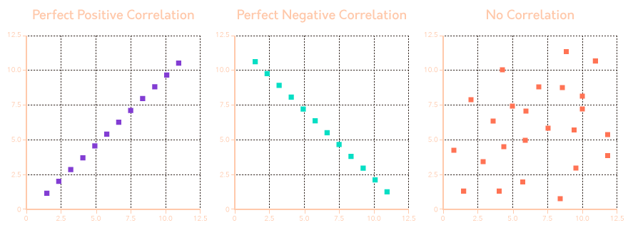

Summary
- The steps of the scientific method are (1) identifying the problem,
(2) gathering information, (3) generating a hypothesis, (4) designing
and conducting experiments, (5) analyzing data and formulating
conclusions, and (6) restarting the process at step 3 by taking what
you’ve learned into consideration.
- The difference between naturalistic and participant observation is
whether the researcher is a part of the environment while making their
observations about it.
- Bias can appear in observational research in many ways, including
when participants change their behavior in response to being observed
(known as reactivity or the Hawthorne effect) and when
multiple observers disagree about what they’ve observed.
- Case studies are an in-depth way to gather a large amount of
detailed information about a single person or a handful of individuals;
however, case studies may not be generalizable to larger
populations.
- Populations need to be sampled effectively, preferably using random
sampling techniques; sampling error/bias can occur when the people who
participate in a study are not representative of the intended
population.
- The way people respond to questions in research studies is
influenced by multiple factors, including but not limited to the wording
of questions, the desire to answer in socially desirable ways, a general
tendency to agree or say yes to questions, and a tendency to think of
ourselves as better than average.
- Five ethical principles have been developed by the American
Psychological Association (APA) to guide research with human subjects:
(1) beneficence and nonmaleficence, (2) fidelity and responsibility, (3)
integrity, (4) justice, and (5) respect for people’s rights and
dignity.
- Ethical research in psychology should strive to have the most
potential benefits to society with the fewest potential harms, not take
advantage of participants, and be truthful with both participants in the
study and the wider scientific community.
- Vulnerable populations (including those with impaired
decision-making skills and those who are vulnerable by virtue of their
circumstances) must be treated with particular care; informed consent is
especially important in these groups.
- Deception in psychological research is only warranted in special
circumstances, and participants must be fully debriefed about any
deception that occurred after they finish participating in the
study.
- A correlation describes the relationship between two or more
variables and can be positive, negative, or zero (unrelated).
- Correlations have both strength and direction; strength describes
how closely two variables are related, while direction describes whether
the variables increase and decrease together (a positive relationship)
or are inversely related, meaning that if one increases the other
variable decreases (a negative relationship).
- Correlation coefficients are calculated to describe the strength and
direction of a correlation.
- Correlation is not the same as causation: At times, correlation
coefficients are misleading or confounding variables can make two
variables appear causally related when they, in fact, are not.
- Experiments are conducted to determine whether manipulating an
independent variable causes changes in a measured dependent
variable.
- Independent variables are manipulated by researchers (resulting in
“experimental” and “control” groups), while changes in a dependent
variable or “outcome measure” represent the effect of the researchers’
manipulation.
- Placebo effects can occur if a person believes in a cause-and-effect
relationship; these effects represent the power of participants’
expectations in an experimental setting and can be mitigated by the use
of placebo groups.
- Internal validity exists in an experiment when a cause-and-effect
relationship can be established; extraneous (confounding) variables
threaten our ability to claim that an independent variable causes a
change in a dependent variable.
- External validity describes the extent to which the results of an
experiment are generalizable to other people, other settings, other time
periods, or other contexts.
- Descriptive statistics are used when we want to report on our
results descriptively: Measures of central tendency (e.g., mean, median,
and mode) attempt to find a number that best represents the data, while
measures of variability (e.g., standard deviation and variance) help
describe the distribution or “spread” of the data.
- The mean is the average score in a data sample, the median is the
“middle” score if the scores were rank-ordered from lowest to highest,
and the mode is the most common score.
- Standard deviation describes the average distance from the mean
score in a data set; this helps us understand whether scores are all
very close to the mean or more spread out.
- Inferential statistics allow us to make inferences about whether
differences exist between two (or more) sets of data; for example,
whether or not a true difference is likely to exist between experimental
and control groups. Such differences could be statistically significant
depending on the results of the analyses used on the data.
Introduction
psychologists had few methods other than logic and reasoning
(rationalism)
now, using experimental methods,
researchers gather facts and observations of phenomena to form
scientific theroies (rational explanations to describe and
predict future behavior)
The Scientific Method
common approach is which researchers methodologically answer
questions
- identify the problem
- gather information
- generate a hypothesis
(the predicted outcome of an experiment or
research study)
- design and conduct experiments
- analyze data and formulate conclusions
- restart the process
Descriptive Methods
any means to capture, report, record, or describe a
group
interested in identifying “what is”, without
necessarily understanding “why it is”
Naturalistic Observation
observation of behavior as it happens in an natural environment
in the scientific process, it suggests potentially interest
- differences
- naturalistic observation: lack of manipulation
- field experiments: manipulates and controls the
conditions in natural settings
- can be captured
- qualitatively (collect opinions, notes)
- quantitatively (measure/count specific
behaviors)
- benefit
- can often help generate new ideas about an observed phenomeon
- better understand behavior exactly as it happens in the real
world
- ecologically valid: product of genuine reactions
- disadvantage: lack control over the environment
- not always sure of what is influencing behavior
- important: stay as unobstrusive as possible
- behavior changes once they realise they are being observed:
reactivity aka Hawthorne effect
Participant Observation
researcher becomes part of the group under investigation
- benefit
- research is privy to new perspectives and insights that would not be
obtainable from naturalistic observation
- drawbacks
- validity: researcher’s views and bias can affect the interpretation
of events
- reliablity: highly dependant on the unique conditions of
participation
Case Study
in-depth analysis of a unique circumstance or individual
- con: generalise
- can never be sure the conclusions draw from this particular case can
be broadly generalised to other cases
Surveys
using questions to collect information on how people think or act
- conducted to a sample (subset of population)
- biases
- the questions must be carefully worded to avoid biasing the outcome,
otherwise will cause wording effects
- response bias: tendency for people to answer the
question the way they feel they are expected to answer
- acquiescent response bias: indiscriminately agree
regardless of their actual opinion
- socially desirable bias: answer questions that they
believe would be seen as acceptable by others
- illusory superiority: describe our own behavior as
better than average
- volunteer bias: only a motivated fraction of
population respond to a survey or participate in research
Research Ethics for Human
set of principles or standards of behavior for psychologists to
follow in research
The Tuskegee Syphilis Study
was intended to follow the natural progression of syphilis(a
contagious desease)
- researchers
- misled participants about the actual purpose of the study
- denied medical treatment
General Ethical Principles
developed by APA
Beneficece and
Non-maleficence
research should to good(beneficence) and avoid creating experiments
that can intentionally harm(maleficence) participants
- psychologists must carefully weigh the benefits of the reseach
against the costs that participants may experience
Fidelity and Responisbility
researchers should be honest and reliable with participants
- let participants know ahead of time the potential risks of
participation
Integrity
psychologists should engage in accurate, honest, and non-biased
practices
- always communicate results to colleagues and the public accurately
- no making up data (fdabrication)
- no manipulating research data (falsification)
Justice
the people who participate in the research process should also be the
same people who stand to benefit from the reseach outcomes
- eg study on child development should only include children
- “child” is an inclusion criterion(attribute of
participants that is necessary to be a part of research study)
- “adult” is an exclusion criterion
- inclusion + exclusion = eligibility criteria
Respect Rights and Dignity
should respect and protect participants’ rights, privacy, and
welfare
- communicate openly and honestly abuot the details before asking for
consent
- respect privacyand confidentiality
- keep data private/anonymous
- no coercion
Practice of Ethical Research
research projects conducted in the USA must be review by
Instutional Review Broad (IRB)
- IRB ensures
- proposed study will use sound research design
- risks associated with participation in the study are minimised and
reasonable
- benefits of the research outweigh any potential risks
- all participants can make an informed decision to participate in the
study, and that decision may be withdrown at any time without
consequence to the participant
- safeguards are in place to protect the well-being of
participants
- all data collected will be kept private and confidential
- after IRB approval, reseachers must obtain informed consent
from all participants by describing essential details of the study
- experimental procedures
- risks
- benefits associated with participation in the study
- how personal information will be protected
- rights of participants
The FB Emotional
Contagion Experiment
Facebook users participated in psychology reseach without informed
consent: violates respect for people’s rights and
dignity
Special Ethical
Considerations
Vulnerable Populations
any group of individuals who may not be able to provide free and
informed consent to participate in reseach
- vulnerable populations
- decisional impairment: participant has diminished
capacity to provide informed consent
- mentally disabled children
- situational vulnerability: the freedom of ‘choice’
to participate in reseach is compromised as a result of undue influence
from another source
- prisoners may feel coerced/obigated to participate out of fear of
being punished if they do not
- people who need money may be inclined to participate
- then, reseacher should consider
- if the research question could be reasonably carried out using
participants without these vulnerabilites, no study should ever be
conducted on vulnerable populations
- when research is carried out with vulnerable populations,
researchers should be responsive to the needs, conditions, and
priorities of these individuals
- decisional impairment: requires
- parents and guardians must provide informed consent on behalf of the
participant
- the participant must provide assent (affirmation
permission to take part in the study)
- situational vulnerbility: additional safeguards should be
put in place to prevent exploitation
- eg include an impartial 3rd party to advocate for the
individuals
Deception
some reseach experiments may seek IRB approval to engage in
participant deception: withhold information abuot the
purpose and procedures of the study during the informed consent
process
- to get approve:
- reseach poses no more than a minimal risk to participants
- => unlikely to cause emotional or physical discomfort to
participants
- deception doesn’t affect the well-being and the rights of the
participants throughout the study
- must provide justification that using deception is the only way to
conduct the study
- after the participant’s role in the study is finished, participants
should be debriefed by reseachers
- must be told about the deception
- must be given reasons why this was necessary
- must be allowed to ask questions and seek clarification
- to leave the study in a similar mental state as to when they entered
the study
Correlation
-1 <= r <= 1 captures the direction and strength
of a relationship between variables
one way to represent relationship between variables is
scatterplot - if the graph cluster tightly together:
strong

Direction

-
positive correlation: r > 0 -
neg: r < 0 - zero
correlation: no correlation r == 0 - line
of best fit: a straight line through the points
Strength
perfect correlation: abs(r) == 1
Misleading
correlations are not causation - a 3rd variable may influence one or
both variable that we are measuring, therefore influencing the
correlation coefficient
Experimental Methods
Hypothesis
prediction about what will happen in research in format of
f'if {do_this}, then {this} will happen'
- consistent with prior observations or an existing
theory
- as simple as possible, only cause-and-effect
relationship between 2 variables
- specific, provied all the details about what to
measure, what changes will be made, what effect is expected
- testable, state what evidence will be measured and
use as a comparasion
- falsifiable, have outcomes that could prove the
hypothesis false
Experimental Variables
manipulate independent variable (IV) and measure
dependent variable (DV)
extraneous/confounding
variable is not the focus of study, but may influence the outcomes
Sample Selection
select people for experimental and control groups
- simple random sample
- every individual in the population has an equal change of
participating
- if large enough, should approximate the population we wish to
study
- stratified random sample
- divide the population by subgroups, randomly takes samples
in proportion to the population of interest
- eg subgroup by gender
- non-random/convenience sample
- group of individuals that are only selected because of a
pre-existing condition
Experimental/Control Groups
experimental group receives the treatment of interest, the
control group doesn’t
In/External Validity
external validity is how the result can be applied
beyond the scope of the experiment, ake
generalisation
Making Sense of the Data
Central Tendency
descriptive statistics: collection of ways to describe the
data using quantitative values
- types of central tendency (single point to describe the center)
- mean (average)
- median (middle)
- mode (most frequent) ## Spread of Data >
variability/range:
max - min
> standard
derivation (SD): \sigma
\sigma=\sqrt{\frac{\sum(x-\bar
x)^2}{n-1}}
| x-\bar x |
derivation |
| \sum(x-\bar x)^2 |
variance |
Inferential Statistics
if the probability p < 0.05, it is unlikely
to happen
Drawing Conclusions
reject the null hypothesis when p < 0.05